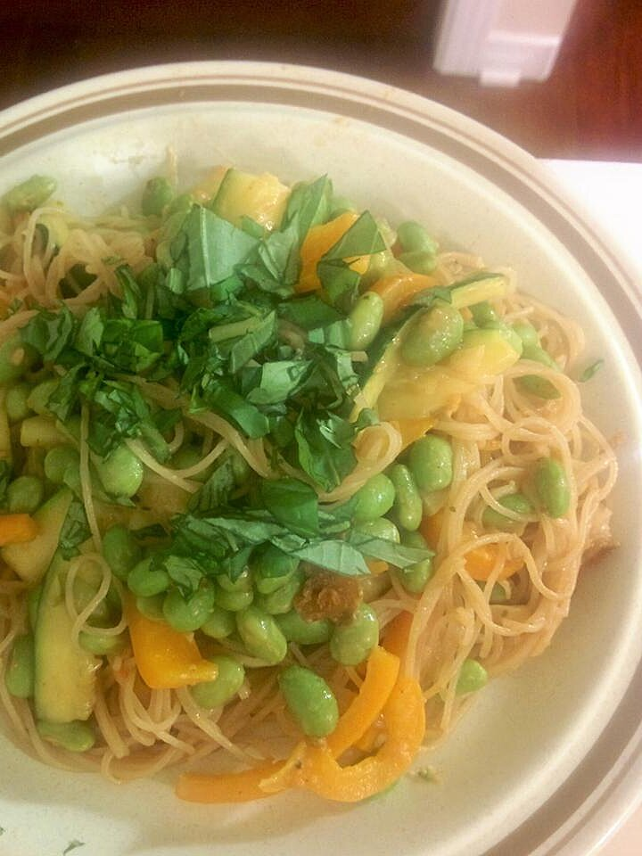

One Pot Thai-Style Rice Noodles

Description
Chicken, vegetables, and noodles prepared in a light tasting but full-flavored Asian-inspired sauce.
You can find the ingredients and recipe steps for the dish below:
Ingredients
for 4 servings
- 2 tablespoons cornstarch
- 1 ½ tablespoons water
- 6 cups chicken broth
- 2 ½ tablespoons soy sauce
- 1 tablespoon fish sauce
- 1 tablespoon rice vinegar
- 1 cup sliced red bell pepper
Steps
- Stir cornstarch and water together in a small bowl until smooth. Pour chicken broth into a large pot and stir cornstarch mixture, soy sauce, fish sauce, rice vinegar, chile-garlic sauce, vegetable oil, ginger, garlic, and coriander into broth. Cover and bring to a boil.
- Place rice noodles in the boiling sauce, reduce heat to medium, and simmer until noodles are tender, 5 to 10 minutes. Stir zucchini, red bell pepper, and chicken into sauce. Bring back to a boil, cover, and simmer until vegetables are just become tender, about 5 more minutes.
- Remove from heat and let stand, covered, for 5 minutes to thicken. Serve garnished with crushed peanuts and cilantro.